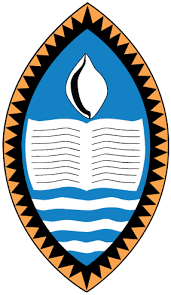

The CEIT is the premier institute for the training and enhancement of Information Technology skills funded by the Government of the Republic of India in collaboration with the Government of the Independent State of Papua New Guinea. It is operated in association with the University of Papua New Guinea (UPNG) and the Centre for Development of Advanced Computing (C-DAC).
Know more
The University of Papua New Guinea (UPNG) is located in Port Moresby, which is the capital of Papua New Guinea. It was established by ordinance of the Australian administration in 1965. UPNG offers various programs in Medicine, Pharmacy, Health Sciences, Physical and Natural Sciences, Law, Business and Public Policy, Humanities, Social Sciences and Sustainable Development fields.
Know moreCDAC is the premier Research and Development (R&D) organization of the Ministry of Electronics and Information Technology (MeitY), India for carrying out R&D in IT, Electronics and associated areas. Different areas of C-DAC had originated at different times, many of which came out as a result of identification of opportunities.
Know moreThe CEIT is an initiative of the Papua New Guinean and Indian Governments to create a pool of knowledgeable workers and generate employment opportunities by producing world-class IT professionals to attract investment in Papua New Guinea & revenues through software export.
To provide world-class Information Technology education and training that empowers individuals, bridges the digital divide, and drives economic growth in Papua New Guinea through strong partnerships with industry and government.
To be the leading Centre of Excellence in Information Technology in the Pacific region, producing highly skilled IT professionals who contribute to the sustainable development and digital transformation of Papua New Guinea.